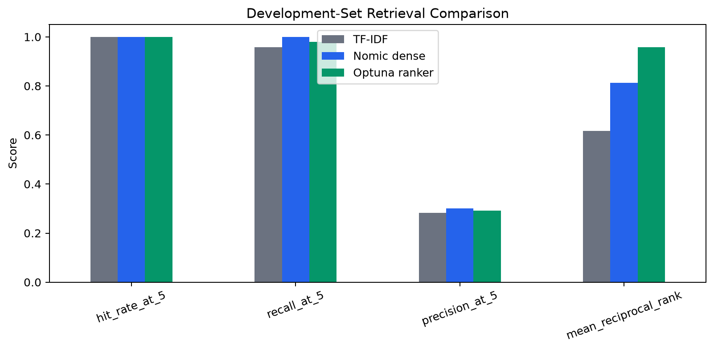
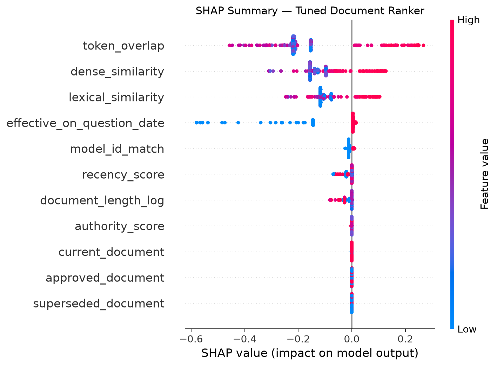

Execution status: Five notebooks completed with zero cell errors. The frozen test split was not accessed.
72
Synthetic governance documents
120
Benchmark questions
0.9583
Tuned development MRR
1.0000
Reader abstention accuracy
Local model architecture
nomic-embed-text produces 768-dimensional retrieval vectors. qwen3.5:9b-q4_K_M generates evidence-grounded answers locally. A random-forest ranker combines semantic, lexical, temporal, status, approval, authority, and recency features; Optuna tunes it and SHAP explains its scores.
Development-set retrieval results
| System | Hit@5 | Recall@5 | Precision@5 | MRR |
|---|---|---|---|---|
| TF-IDF cosine | 1.0000 | 0.9583 | 0.2833 | 0.6174 |
| Nomic dense cosine | 1.0000 | 1.0000 | 0.3000 | 0.8125 |
| Optuna-tuned ranker | 1.0000 | 0.9792 | 0.2917 | 0.9583 |
Honest tradeoff: the tuned ranker improves first-relevant-document placement substantially, but dense retrieval retains slightly higher Recall@5 and Precision@5.

Reader evaluation
- Abstention accuracy: 1.0000
- Citation hit rate: 0.9583
- Grounded-citation rate: 1.0000
- Average latency: 2.45 seconds
Optuna result
- 25 seeded trials
- 220 trees
- Maximum depth: 3
- Minimum leaf size: 5
- Balanced subsample weighting
What SHAP found
The five most influential ranking signals were token overlap, dense similarity, lexical similarity, effective-date applicability, and model-family match. SHAP explains the feature-based ranker—not Qwen's internal token generation.
